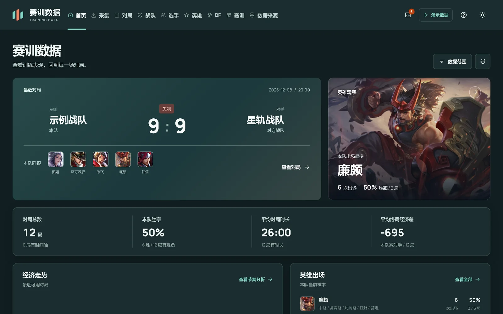

一页看完一局
比赛时间线、经济曲线、掉点定位与阵容对照放在同一个视图里。复盘会直接投屏，结论可导出 PDF 进训练小结。
本局结论 · 训练赛胜利
示例战队本队 · 左侧
17:14
熔岩战队对手 · 右侧
截图、录屏、表格、营地链接进入同一条本机链路：识别、核对、入库、分析。复盘会上直接投屏，每个数字都标明来源。
下载 Windows 版 v1.1.0
比赛时间线、经济曲线、掉点定位与阵容对照放在同一个视图里。复盘会直接投屏，结论可导出 PDF 进训练小结。
多局数据按同分路、同口径聚合重算，不拿训练量和比赛量混着比；选手状态与英雄池的变化一眼可见。
已入库对局按日期、对手与阵容归档；重复导入自动合并，缺失项有明确标记，训练量可追溯。
赛后截图、录屏、xlsx 表格、营地链接统一进入本地链路；本机识别先出候选值，再由你逐项确认。
安装 Python 3.11+，克隆仓库并启动。浏览器打开 127.0.0.1:8766，就是完整工作台。
$ git clone https://github.com/hccccc01333/kpl-scrim-lab.git
$ cd kpl-scrim-lab
$ pip install -r requirements.txt
$ python server.py
服务保持运行，另开一个终端导入 12 场合成对局。队名、选手名与比分全部虚构，适合先看效果。
# 服务保持运行，另开一个终端
$ python scripts/seed_demo_data.py